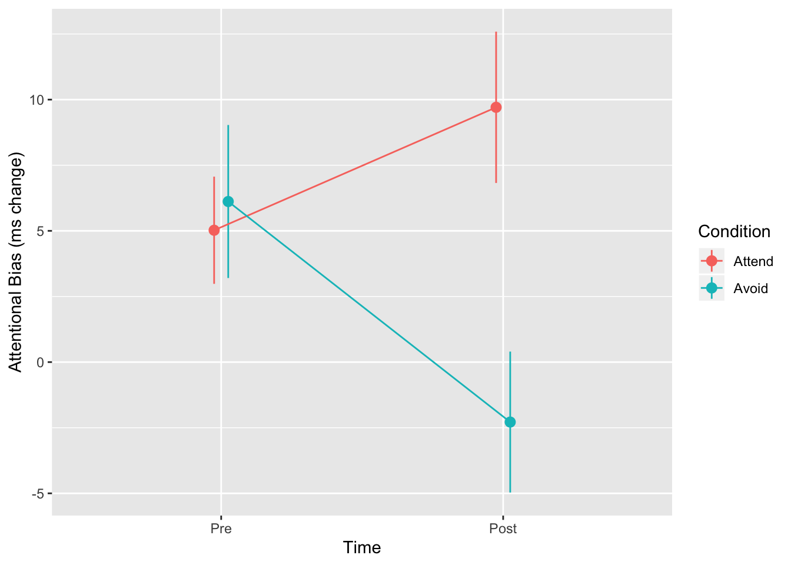
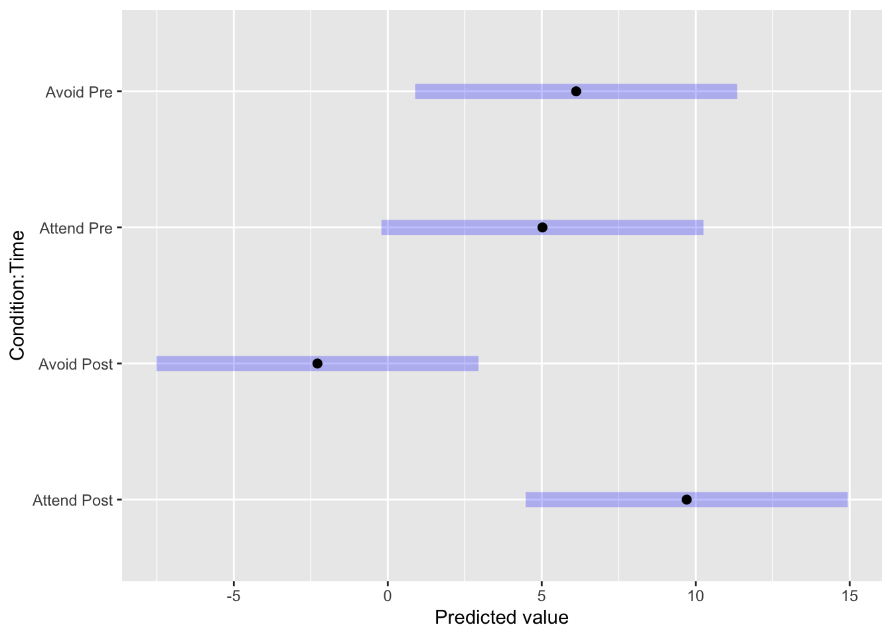

Extensions
Factorial anova in mixed models
The file journal.pone.0226387.s001.sav contains data from Kemps et al. (2019). These have been reshaped to long format and tidied up in data/drinks.csv.
The study explored the effect of an cognitive bias modification intervention, and one of the outcomes was Attentional Bias in a dot-probe task.
There were two experimental conditions (between subjects) and participants were tested twice. The original paper reported results from a mixed model in which Time was a repeated/within-subjects factor.
| Participant | Condition | Age | Gender | Time | AttBias |
|---|---|---|---|---|---|
| 1 | Attend | 18 | Female | Pre | -5.794 |
| 1 | Attend | 18 | Female | Post | -17.86 |
| 2 | Avoid | 19 | Female | Pre | -5.19 |
| 2 | Avoid | 19 | Female | Post | 26.08 |
| 3 | Attend | 24 | Male | Pre | 27 |
| 3 | Attend | 24 | Male | Post | 15.81 |
Plotting the data indicates a Time*Condition interaction:

- Run a random intercepts model which would test the relationships shown in the plot above
Linear mixed model fit by REML ['lmerModLmerTest']
Formula: AttBias ~ Condition * Time + (1 | Participant)
Data: drinks
REML criterion at convergence: 2033.767
Random effects:
Groups Name Std.Dev.
Participant (Intercept) 4.975
Residual 19.592
Number of obs: 232, groups: Participant, 116
Fixed Effects:
(Intercept) ConditionAvoid TimePre
9.706 -11.991 -4.684
ConditionAvoid:TimePre
13.086 - Use the
anovacommand to test the interaction of Condition and Time
Type III Analysis of Variance Table with Satterthwaite's method
Sum Sq Mean Sq NumDF DenDF F value Pr(>F)
Condition 1525.01 1525.01 1 114 3.9729 0.04863 *
Time 200.51 200.51 1 114 0.5224 0.47132
Condition:Time 2482.99 2482.99 1 114 6.4685 0.01232 *
---
Signif. codes: 0 '***' 0.001 '**' 0.01 '*' 0.05 '.' 0.1 ' ' 1There does appear to be an interaction.
Follow-up tests
To run follow-up tests comparing individual cells in the design we can use another R package called emmeans.
The emmeans function (which is inside the emmeans package we just loaded), can calculate means and confidence intervals for each cell in the design:
Condition Time emmean SE df lower.CL upper.CL
Attend Post 9.71 2.65 227 4.476 14.94
Avoid Post -2.28 2.65 227 -7.515 2.95
Attend Pre 5.02 2.65 227 -0.207 10.25
Avoid Pre 6.12 2.65 227 0.887 11.35
Degrees-of-freedom method: kenward-roger
Confidence level used: 0.95 In the code above we used the emmeans function, and gave it the saved random intercept model as input. In the second input (where is says ~Condition*Time) we are using a formula to describe which part of the design we would like means for.
Helpfully, you can also plot the results of this function, so the folliwing is a shortcut for writing a ggplot command yourself:

We can also save the results of emmeans and send it to the contrast function. This produces t tests for each pairwise comparison:
savedmeans1 <- emmeans(drinks.m1, ~Condition*Time)
contrast(savedmeans1, method='pairwise', adjust='none') contrast estimate SE df t.ratio p.value
Attend,Post - Avoid,Post 11.99 3.75 227 3.195 0.0016
Attend,Post - Attend,Pre 4.68 3.64 114 1.287 0.2006
Attend,Post - Avoid,Pre 3.59 3.75 227 0.956 0.3400
Avoid,Post - Attend,Pre -7.31 3.75 227 -1.947 0.0528
Avoid,Post - Avoid,Pre -8.40 3.64 114 -2.309 0.0227
Attend,Pre - Avoid,Pre -1.09 3.75 227 -0.292 0.7708
Degrees-of-freedom method: kenward-roger And we can add adjust="bonferonni" or adjust="tukey" method to adjust for multiple comparisons
contrast estimate SE df t.ratio p.value
Attend,Post - Avoid,Post 11.99 3.75 227 3.195 0.0086
Attend,Post - Attend,Pre 4.68 3.64 114 1.287 0.5728
Attend,Post - Avoid,Pre 3.59 3.75 227 0.956 0.7744
Avoid,Post - Attend,Pre -7.31 3.75 227 -1.947 0.2116
Avoid,Post - Avoid,Pre -8.40 3.64 114 -2.309 0.1019
Attend,Pre - Avoid,Pre -1.09 3.75 227 -0.292 0.9913
Degrees-of-freedom method: kenward-roger
P value adjustment: tukey method for comparing a family of 4 estimates If we want to compare pairs of groups, we can adjust the formula we pass to the emmeans function. In the example below I compare Conditions averaged across both time periods:
contrast estimate SE df t.ratio p.value
Attend - Avoid 5.45 2.73 114 1.993 0.0486
Results are averaged over the levels of: Time
Degrees-of-freedom method: kenward-roger In this example we compare the Pre and Post measurement times within each group (here the bar symbol, |, is read as ‘within’):
Condition = Attend:
contrast estimate SE df t.ratio p.value
Post - Pre 4.68 3.64 114 1.287 0.2006
Condition = Avoid:
contrast estimate SE df t.ratio p.value
Post - Pre -8.40 3.64 114 -2.309 0.0227
Degrees-of-freedom method: kenward-roger Useful emmeans examples
# get the means of all combinations of factors A and B
emmeans(model, ~A+B)
# menas the same as the line above
emmeans(model, ~A*B)
# show all pairwise contrasts for all combinations of A and B
contrast(emmeans(model, pairwise~A+B), pairwise)
# show tests of the effect of A within each level of B
contrast(emmeans(model, pairwise~A|B), pairwise)
# show the confidence interval for the tests above:
confint(contrast(emmeans(model, pairwise~A|B), pairwise))- Adjust the code using
emmeansandcontrastabove to compare Pre vs Post scores (averaged across Condition) - Compare the conditions within each time period.
contrast estimate SE df t.ratio p.value
Post - Pre -1.86 2.57 114 -0.723 0.4713
Results are averaged over the levels of: Condition
Degrees-of-freedom method: kenward-roger # compare conditions within each time
contrast(emmeans(drinks.m1, ~Condition|Time), method='pairwise')Time = Post:
contrast estimate SE df t.ratio p.value
Attend - Avoid 11.99 3.75 227 3.195 0.0016
Time = Pre:
contrast estimate SE df t.ratio p.value
Attend - Avoid -1.09 3.75 227 -0.292 0.7708
Degrees-of-freedom method: kenward-roger References
Kemps, Eva, Marika Tiggemann, Mikaela Cibich, and Aleksandra Cabala. 2019. “Cognitive Bias Modification for Energy Drink Cues.” PloS One 14 (12).